/math-22cf6d90476d6b87655fb83d74ee08f5.png "x_i\") がi 番目の変数に、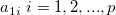は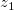の線形関係の係数となり、これらは列ベクトル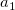として示され、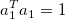で正規化されます。 の分散は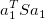となります。
がi 番目の変数に、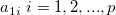は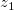の線形関係の係数となり、これらは列ベクトル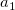として示され、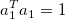で正規化されます。 の分散は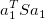となります。
内容 |
主成分分析は変数間の関係を調べます。これにより、例えば変数の数を回帰やクラスター分析などで減らすことができます。
主成分分析内の主成分は変数とそれに対するの最大分散との関係を線形で表わしています。Xをｐ個の変数を持つｎ個の観測値とし、この共分散の行列はSとなります。ここで変数間の線形の関係は次のようになります。
がi 番目の変数に、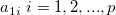は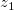の線形関係の係数となり、これらは列ベクトル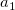として示され、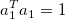で正規化されます。 の分散は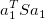となります。
ベクトルは分散を最大にすることで見つけることができます。は第一主成分と呼ばれています。第二主成分は次の物を最大化することで同じように見つけることができます。
これは第二主成分が第一主成分とは直交関係にあることを示しています。残りの主成分は同様の方法で算出することができます。係数 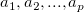 は行列Sの固有ベクトルから計算できます。Originは欠損値を取り除くためにいくつかの手法を用いています。
欠損値がある観測データは分析から除外されます。SVD用の行列 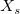 は分析の行列タイプによりXから算出されます。
/math-7972095bacc7478fcb70fd6733c0f5bb.png "\sigma_i\") はi番目の標準偏差になります。
はi番目の標準偏差になります。SVDを で実行します。
ここでVは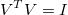と共にあるp行列のｎで、Pはp行列のｐで、 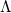 は対角要素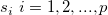を含む対角行列です。
観測値は共分散や係数を計算する２つの変数の中で欠損値がどちらか一方にでもあるときに計算する場合のみ除かれます。
固有値と固有ベクトルは行列Sの共分散または係数から計算されます。
Pはp行列のｐで、Dは対角要素 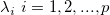 がある対角行列です。
バーレット検定は残りの固有値p－kを等しくしています。これは分析行列が共分散行列であるときのみ使用できます。
自由度 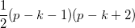 で 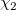 分散をおおよそで計算しています。
/math-465397770aeec65eb2b9adadcdd2c942.png "(n-1-(2p+5)/6)\Big\{-\sum_{i=k+1}^p \mathrm{log}(\lambda_i)+(p-k)\mathrm{log}(\sum_{i=k+1}^p \lambda_i/(p-k))\Big\}")